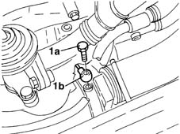
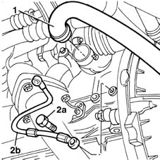

1084B40 engine oil delivery pipe to turbocharger - r + r
- Path
- Procedures > 10 ENGINE UNIT > 1084 ENGINE LUBRICATION SYSTEM > 1084B engine oil lubrication circuit > 1084B40 engine oil delivery pipe to turbocharger - r + r
- Kind
- repair procedure (removal / refitting; the operation number is the code)
- Applies to
- engines: 1.9 JTD 8V; all production periods
- Interactive page
- https://sloeber94.github.io/elrnDB-fMltpl/en/#/2891440
Applies to: engines: 1.9 JTD 8V; all production periods
 Removing
Removing
 Refitting
Refitting1072C44 exhaust manifold heat shield on bulkhead - r+r
1. Undo connector (1a) and disconnect engine oil supply pipe to the turbocharger (1b), turbocharger side.

Applies to: engines: 1.9 JTD 8V; all production periods
Raise the car.
1. Disconnect the air supply hose to the heat exchanger from the turbocharger.
2. Undo connector (1a) and remove engine oil supply pipe to the turbocharger (1b).

Applies to: engines: 1.9 JTD 8V; all production periods
Refitting
RemovingFit the engine oil supply pipe to the turbocharger and secure it to the crankcase by tightening the connector to the recommended torque.
Connect the heat exchanger air supply hose to the turbocharger.
Lower the vehicle.
Connect the engine oil supply pipe to the turbocharger and secure it by tightening the connector to the specified torque.